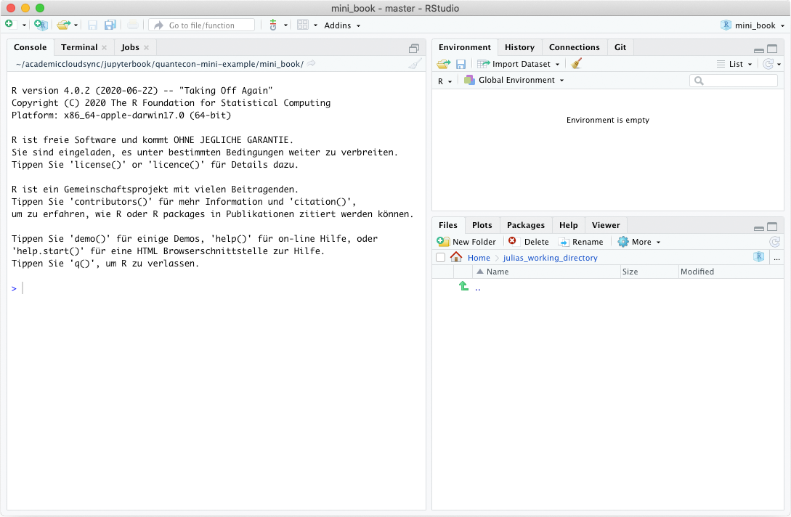

RStudio Benutzeroberfläche¶
Die Benutzeroberfläche von RStudio gliedert sich in verschiedene Bereiche. Wenn Sie RStudio zum ersten Mal öffnen, sieht sie in etwa so aus:
Console¶
Links finden Sie die bereits bekannte K/Console, sie schreibt sich hier mit “C”, weil die Benutzeroberfläche von RStudio nur in Englisch verfügbar ist. Hier werden die Ergebnisse von Berechnungen ausgegeben und man kann auch wie bereits im Abschnitt “Konsole” beschreiben Befehle eingeben. Der linke Bereich enthält neben der Console noch weitere Tabs (Terminal und Jobs). Diese benötigen wir jedoch momentan nicht.
Environment¶
Der Bereich rechts ist zweigeteilt. Oben findet sich die Environment, zu deutsch Arbeitsumgebung. Hier werden die Objekte angezeigt, die während der aktuellen R-Session erzeugt wurden. Ein Objekt kann dabei alles mögliche sein, z.B. ein Datensatz oder das Ergebnis einer Berechnung. Im Moment ist die Arbeitsumgebung natürlich noch leer. Auch dieser obere rechte Bereich hat mit History, Connections und Git weitere Tabs. Unter History werden alle Befehle der aktuellen R-Session protokolliert. Die anderen Bereiche sind zunächst nicht interessant für uns.
Files, Plots, Packages, Help & Viewer¶
Im unteren rechten Bereich finden sich ebenfalls verschiedene Tabs.
Der erste heißt Files. Wenig überraschend findet sich dort ein Dateibrowser, in dem Ihr Arbeitsverzeichnis und die sich darin befindlichen Dateien angezeigt werden. Mit den Icons im Bereich können Sie durch Ihr Filesystem navigieren. Wären in ihrem Arbeitsverzeichnis bereits Dateien abgelegt, könnten Sie diese durch Doppelklick auch direkt in RStudio öffnen.
Im zweiten Tab Plots werden Grafiken, die Sie mit R erzeugt haben angezeigt. Auch der letzte Tab Im Viewer dient zur Anzeige von in R erzeugten Inhalten.
Im Tab Packages sehen sie die R-Pakete, die auf Ihrem Rechner bereits installiert sind. Über den Button Install können Sie CRAN nach weiteren Packeten suchen und diese installieren. Um ein Paket in einer Session benutzen zu können muss es aber nicht nur installiert sein, es muss auch “aktiviert” bzw. geladen werden. Wie das genau geht behandeln wir später noch einmal im Detail. Im Tab Packeges kann man an dem Kästchen vor den einzelnen Paketen sehen, ob ein Paket in der aktuellen Arbeitssession bereits geladen wurde (dann würde hier ein Häkchen angezeigt werden).
Der Tab Help beinhaltet die Hilfe und Anleitungen für die einzelnen Funktionen von R.
Man kann die Hilfe aufrufen indem man ein Suchwort in das Suchfeld ganz links eingibt. Alternativ kann man auch innerhalb des Quelltextes den Cursor auf eine Funktion setzen und dann die Funktionstaste F1 drücken.
Außerdem kann man die Hilfe einer Funktion auch über den Befehl ?name_der_funktion() aufrufen. Gibt man diesen Befehl ein, öffnet sich automatisch der Help-Tab mit dem gesuchten Inhalt.
R-Skripte¶
Mit RStudio kann man natürlich nicht nur Befehle in der Konsole ausführen, sondern seine Arbeit auch in Dateien speichern. Das Basis-Dateiformat von R hat die Dateiendung .R. Es gibt drei Möglichkeiten eine neue R-Datei anzulegen:
Über das Menü “File > New File > R Skript”
Über das kleine Icon mit dem weißen Rechteck und dem grünen Pluszeichen links oben unter im Menü.
Über das Tastenkürzel
Strg/Cmd + Shift + N
Sobald die erste R-Datei angelegt oder geöffnet wurde öffnet sich in RStudio auch ein neuer Bereich, der die R-Datei enthält. Dieser Bereich kann in unterschiedlichen Tabs auch verschiedene R-Skripte beinhalten. Er sieht in etwa so aus:
Wenn Sie ein neues R-Skript angelegt haben, empfiehlt es sich, dieses zunächst einmal unter einem sinnvollen Namen zu speichern. Das geht ebenfalls entweder über das Menü, das Speicher-Icon oder die übliche Tastenkombination Strg/Cmd + S. Der Name eines gespeicherten Skripts wird im Tab oben übrigens in schwarz dargestellt. Skripte, die Änderungen enthalten, welche noch nicht abgespeichert wurden werden in rot angezeigt.
Genau wie in der Konsole, können Sie im R-Skript Befehle eintippen. Allerdings werden sie nicht ausgeführt, wenn man Eingabe/Enter drückt - dann springt der Cursor lediglich in die nächste Zeile (genau wie in jeder anderen Textverarbeitungs-Software). Zum Ausführen des R-Skriptes können Sie entweder oben den Button Run benutzen oder den Shortcut Strg/Cmd + Eingabe/Enter. R führt dann die Zeile aus, in der sich der Curser befindet oder auch mehrere Code-Teile, die Sie zuvor gemeinsam markiert haben.
Tipp
Am besten Sie gewöhnen sich die Tastenkombi Strg/Cmd + Eingabe/Enter zum Ausführen von Befehlen direkt an. Das spart sehr viel Zeit!